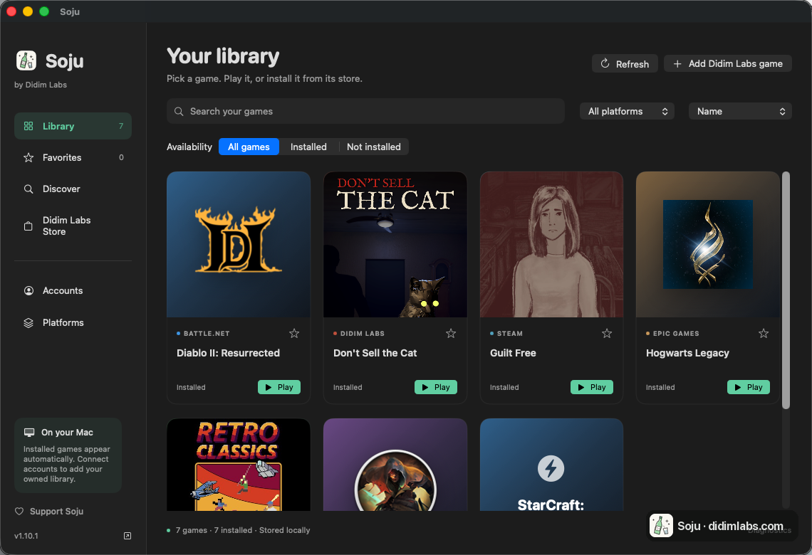

Soju
A free Mac app for playing Windows games on Apple Silicon. It installs the real Steam, Battle.net, Epic, GOG GALAXY and Xbox PC launchers, keeps each in its own Wine setup, and lists every installed game in one library.

What it does
- Sets up each launcher you pick: Battle.net, Epic and GOG share a Wine engine built from CodeWeavers' sources with Apple's D3DMetal; Steam gets its own Wine 11 setup with DXMT for D3D11 games.
- Finds installed games across all of them, and imports the games you own on Steam and GOG.
- Searches Steam, GOG and Microsoft Store listings with prices for your region.
- Xbox PC (experimental): imports owned and Game Pass games and downloads them through the Xodus backend.
- Has a store tab for games we make at Didim Labs, built natively for Apple Silicon.
Logins, purchases and game updates stay with each store. Soju doesn't bundle games, store clients or Apple's Game Porting Toolkit.
Games we've run
Tested on an M4 Pro Mac with macOS 26.5. Other games may or may not work; please report what you try.
| Game | Store | Result |
|---|---|---|
| Diablo II: Resurrected | Battle.net | Plays online. Needs macOS 26.4+. Guide |
| Hogwarts Legacy | Epic | Installs and plays with D3DMetal. |
| Guilt Free (Unity, D3D11) | Steam | Plays with the DXMT setup. Guide |
| Retro Classics | Xbox PC | Reaches the main menu. |
| GOG GALAXY | GOG | Login and library work; few games tried yet. |
Games with kernel-level anti-cheat won't run. The Steam edition of Diablo II: Resurrected hasn't been checked.
30-second clip: Hogwarts Legacy through Epic, Guilt Free through Steam.
Games from Didim Labs
 Don't Sell the Cat · $6.99 · Mac and Windows
Don't Sell the Cat · $6.99 · Mac and WindowsSeven nights at a 1958 pawnshop counter. Check items with a loupe, UV lamp, scale and the shop cat, and don't open the back shutter.
Install
Soju-1.10.1-macos-arm64.zip: unzip, move Soju to Applications, open it, and pick launchers on the Platforms page. Signing notes.
From the terminal:
curl -fsSL https://didimlabs.com/install.sh | bashOr with Homebrew:
brew install BCD1210/soju/soju
soju installYou'll need Rosetta 2, the Xcode Command Line Tools and Homebrew. Battle.net, Epic and GOG also need Apple's Game Porting Toolkit, which you download yourself with an Apple ID. soju doctor checks the setup; soju update updates it.
Guides
FAQ
Can I play Windows games on an M1, M2, M3 or M4 Mac with Soju?
Often, yes. Soju runs the Windows launchers through Wine with Apple's D3DMetal or DXMT. Diablo II: Resurrected, Hogwarts Legacy and Guilt Free have been played on an M4 Pro with macOS 26.5. Games with kernel anti-cheat do not run.
Is Soju free?
Yes. Soju is free and open source under GPL-3.0-or-later. You buy games from the stores as usual. Didim Labs also sells its own Mac games in Soju's store tab.
Which macOS version do I need?
The Soju app needs macOS 14 or later on Apple Silicon. Steam games need macOS 26 or later, and Diablo II: Resurrected needs macOS 26.4 or later.
Is Soju a Whisky or CrossOver alternative?
It covers similar ground. Whisky is no longer developed and CrossOver is paid. Soju is free, focuses on the official store launchers, and builds its Wine engine from CodeWeavers' published sources.
Does Soju need my store passwords?
No. You sign in inside each official launcher. Library imports stay on your Mac and Soju has no account of its own.
A game won't start. What now?
Run soju doctor (or soju doctor d2r), check the guides, then open an issue with the game, your Mac, macOS version and what you see.